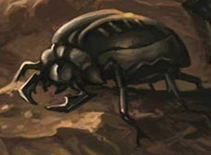

|
 |
Ambiente/Habitat | Qualsiasi (non artico ed acquatico) |
| Frequenza | Comune | |
| Organizzazione | Solitario o Piccoli Gruppi | |
| Periodo di Attività | Quasiasi | |
| Dieta | Onnivori | |
| Intelligenza | Non Intelligent (0) | |
| Punti Combattimento | Nessuno | |
| Tesoro | Occasionale | |
| Allineamento Dominante | Neutrale | |
| Numero di Apparizione | 1d20: (1-10) 1 (11-17) 1d4+1 (18-20) 2d6 | |
| Classe Armatura | 5 [10 base, -5 corazza] | |
| Movimento | 6 esagoni | |
| Dadi Vita | 1 (+2 punti ferita) | |
| Thac0 | 20 | |
| Numero di Attacchi | Morso | |
| Danni | 1d4+1 (taglio) | |
| Poteri Offensivi | Nessuno; | |
| Poteri Difensivi | Robustezza Superiore (+2 punti ferita); | |
| Poteri Generici | Nessuno; | |
| Vulnerabilità | Nessuna | |
| Resistenza alla Magia | Nessuna | |
| Sensi | Vista Comune, Senso del Tremore (15 metri) | |
| Dimensioni | Medium (1 m. lungo) | |
| Morale | Average (8) | |
| Valore in Punti Esperienza | 22 |
|
TIRI SALVEZZA DELLA CREATURA |
|||||||
| CORAGGIO | ENERGIA VITALE | MAGIA | MALATTIA | MENTE | RIFLESSI | ROBUSTEZZA | VELENO |
| 0 | 0 | 0 | +5% | 0 | 0 | 0 | 0 |
| 52 | 58 | 65 | 46 | 63 | 57 | 56 | 53 |
Descrizione
Lo scarafaggio gigante ha un corpo massiccio e compatto lungo circa un metro. Le sue grosse mandibole a tenaglia sono affilate e chiaramente capaci di infliggere danni come un pugnale affilato.
Combat
Lo scarafaggio gigante attacca semplicemente le proprie vittime mordendole con le mandibole affilate.
ROBUSTEZZA SUPERIORE (Typical Ability): Il fisico della creatura è estremamente robusto conferendo alla stessa una robustezza superiore che gli garantisce 2 punti ferita supplementari.
Habitat/Society
Lo scarafaggio gigante è il più comune fra tutti gli scarafaggi mostruosi.
Ecology
Lo scarafaggio gigante si colloca molto in basso nella catena alimentare. Nonostante le sue mandibole affilate ed il robusto carapace, infatti, viene predato da numerose creature mostruose di potenza superiore che si nutrono delle sue carni grasse e bianche ma dal sapore amarissimo.
|
|
Ambiente/Habitat | Qualsiasi (non artico ed acquatico) |
| Frequenza | Non Comune | |
| Organizzazione | Solitario o Piccoli Gruppi | |
| Periodo di Attività | Quasiasi | |
| Dieta | Onnivori | |
| Intelligenza | Non Intelligent (0) | |
| Punti Combattimento | Nessuno | |
| Tesoro | Occasionale | |
| Allineamento Dominante | Neutrale | |
| Numero di Apparizione | 1d12: (1-7) 1 (8-12) 1d3+1 | |
| Classe Armatura | 3 [10 base, -7 corazza] | |
| Movimento | 6 esagoni | |
| Dadi Vita | 5 (+5 punti ferita) | |
| Thac0 | 16 | |
| Numero di Attacchi | Morso | |
| Danni | 2d10 (taglio) | |
| Poteri Offensivi | Ampia Portata d'Attacco; | |
| Poteri Difensivi |
Assorbimento Minimo del Danno; Robustezza Superiore (+5 punti ferita); |
|
| Poteri Generici | Nessuno; | |
| Vulnerabilità | Nessuna | |
| Resistenza alla Magia | Nessuna | |
| Sensi | Vista Comune, Senso del Tremore (18 metri) | |
| Dimensioni | Large (3 m. lungo) | |
| Morale | Elite (13) | |
| Valore in Punti Esperienza | 452 |
|
TIRI SALVEZZA DELLA CREATURA |
|||||||
| CORAGGIO | ENERGIA VITALE | MAGIA | MALATTIA | MENTE | RIFLESSI | ROBUSTEZZA | VELENO |
| 0 | 0 | 0 | +5% | 0 | 0 | +5% | 0 |
| 45 | 50 | 59 | 39 | 57 | 53 | 42 | 41 |
Descrizione
Si tratta di un enorme scarafaggio nero dal corpo massiccio ed assai compatto. Degne di nota sono le sue grosse mandibole a tenaglia chiaramente capaci di infliggere gravi danni alle vittime dei suoi morsi.
Combat
Il Boring Beetle concentra la propria forza nelle grosse mandibole. Per tale motivo costui attacca le proprie vittime utilizzando le sue forti mandibole che sono in grado di produrre fino a venti danni con un morso ben assestato.
AMPIA PORTATA D'ATTACCO (Least Special Ability) [MORSO] : Data la portata dell'attacco indicato, lo stesso risulta più difficile da schivare o da deflettere imponendo rispettivamente una penalità di -15% e di -3 ai tentativi nelle predette arti di combattimento.
ASSORBIMENTO MINIMO DEL DANNO (Typical Ability): Il corpo della creatura è così compatto che la stessa riduce di - 1 danno ogni singolo attacco fisico (botta,taglio,punta) subito (indipendentemente dai dadi di danno tirati con l'attacco), questo beneficio non si estende ai danni diversi da quelli fisici (come fuoco e come i danni di molte magie i cui effetti non possono essere ricondotti a quelli di danni fisici).
ROBUSTEZZA SUPERIORE (Typical Ability): Il fisico della creatura è estremamente robusto conferendo alla stessa una robustezza superiore che gli garantisce 5 punti ferita supplementari.
Habitat/Society
Il Boring Beetle è uno scarafaggio mostruoso abbastanza comune. Nonostante siano creatura non considerabili intelligenti questi esseri mostruosi, quando lavorano collettivamente come nido organizzato sembrano opporre scelte razionali alle difficoltà che gli eventi pongono loro.
Ecology
I Boring Beetle si nutrono principalmente di legno marcio. Si tratta, in ogni caso, di esseri onnivori che possono, specie in periodo di crisi, nutrirsi potenzialmente di carne e perfino ossa di creature viventi.
|
|
Ambiente/Habitat | Pianure Aride, Colline e Montagne Rocciose |
| Frequenza | Non Comuni | |
| Organizzazione | Colonia Marciante | |
| Periodo di Attività | Qualsiasi | |
| Dieta | Carnivori | |
| Intelligenza | Non Intelligent (0) | |
| Punti Combattimento | Nessuno | |
| Tesoro | Nessuno | |
| Allineamento Dominante | Neutrale | |
| Numero di Apparizione | 6 +1d4* 3 | |
| Classe Armatura | 4 [8 base, -2 corazza, -2 destrezza] | |
| Movimento | 4 esagoni | |
| Dadi Vita | 1 | |
| Thac0 | 19 | |
| Numero di Attacchi | Morso | |
| Danni | 1d4 (taglio) | |
| Poteri Offensivi |
Istinto
Predatorio; Arrampicarsi sull'Avversario; Malattia; |
|
| Poteri Difensivi | Nessuno; | |
| Poteri Generici | Nessuno; | |
| Vulnerabilità | Nessuna | |
| Resistenza alla Magia | Nessuna | |
| Sensi | Vista Comune, Sensi Superiori | |
| Dimensioni | Tiny (50 cm. lungo) | |
| Morale | Steady (11) | |
| Valore in Punti Esperienza | 88 |
| MODIFICATORI AI TIRI SALVEZZA | |||||||||||||||||||||||
| COR | 0 | 52 | ENV | 0 | 58 | MAG | 0 | 65 | MAL | +10 | 41 | MEN | 0 | 63* | RIF | 0 | 57 | ROB | 0 | 56 | VEL | 0 | 53 |
Descrizione
Questi grossi scarafaggi misurano circa mezzo metro di lunghezza. Nonostante siano di modeste dimensioni sono dotati di tenaglie circolari ed appuntite chiaramente in grado di ferire anche creature di dimensioni maggiori della loro.
Combat
Queste creature
mirano a sopraffare le loro vittime contando sul numero. Essendo relativamente
lente queste creatura cercano di avvicinarsi ai propri nemici di sorpresa ,senza
farsi notare. Per tale motivo costoro cercheranno di concentrare gli attacchi su
un singolo individuo circondandolo ed assaltandolo ripetutamente.
ISTINTO PREDATORIO
(Moderate Special
Ability):
La creatura possiede un forte
istinto predatorio, per tale motivo costei riceve un
bonus costante di
+1
ai suoi tiri per colpire.
ARRAMPICARSI
SULL'AVVERSARIO
(Superior
Special Ability)
: Queste creature possono arrampicarsi sul
corpo dell'avversario qualora lo stesso sia di almeno una taglia superiore alla
loro. Ciò avviene ogni volta che le stesse colpiscono l'avversario con un tiro
per colpire. Si noti che su una vittima potranno arrampicarsi un numero massimo
di queste creature pari al numero massimo di riempimento dell'esagono occupato
dal corpo vittima (ad esempio, se si tratta di creature di taglia Tiny potranno
arrampicarsi un numero massimo di tre di queste creature per ogni esagono
occupato dal corpo della vittima). Qualora sia presente già il numero massimo di
creature arrampicate questa abilità non potrà essere utilizzata da altre
creature sulla stessa vittima. Una volta arrampicati sul corpo della vittima
saranno applicati i seguenti modificatori al combattimento:
a) Se la vittima
utilizza un’arma di dimensioni Medium ottiene una penalità di – 2 al tiro per
colpire contro le creature che le sono addosso, se utilizza un’arma di
dimensioni Large ottiene una penalità di – 4 al tiro per colpire; se si tratta
di un'arma a due mani si aggiungerà una penalità supplementare di – 2 al
tiro per colpire; se si tratta di un'arma da botta si aggiungerà una penalità
supplementare di – 1 al tiro per colpire; se la vittima impugna uno scudo
(ad eccezione della rotella) costei otterrà una penalità supplementare di – 1
al tiro per colpire.
b) Lo scudo e la destrezza non migliorano la classe armatura della vittima nei
confronti degli attacchi effettuati dalle creature che le sono addosso.
c) La vittima ha il 10% di fallire nel lancio degli incantesimi aventi
componenti somatici per ogni creatura che le si trova addosso.
d)
Se una terza creatura prova ad
attaccare una delle creature arrampicate in corpo a corpo od utilizzando
incantesimi aventi tiro per colpire costei avrà il 30% di possibilità di
dirigere il proprio attacco contro la vittima, utilizzando 3 punti combattimento
(non ovviamente in caso di lancio di incantesimi) questa percentuale scende al
15% e l'attaccante si considererà aver utilizzato nel round un colpo speciale di
combattimento. Chi attacca una delle creature arrampicate con armi da lancio o
da tiro dovrà seguire le normali regole del random shot ma la vittima si considererà
avente una taglia
superiore.
e)
Effetti e magie ad area che
colpiscono la posizione occupata dalla vittima avranno effetto sia su costei che
sulle creature arrampicate.
La vittima può, utilizzando un'azione complessa della durata di un intero round
e richiedente l'utilizzo di 1 punto fatica, prova a scrollarsi di dosso tutte le
creature che le si sono aggrappate. A tal fine costei dovrà superare un tiro
salvezza su robustezza (modificato dal punteggio posseduto in forza in luogo di
quello di costituzione) per ogni creatura. Per ogni tiro salvezza riuscito si
sarà liberato di una creatura la quale potrà disporsi in qualsiasi posizione
libera adiacente a quella previamente occupata.
MALATTIA (Moderate Special Ability) : Queste creature possono trasmettere una malattia. Alla fine del combattimento contro le stesse ogni creatura sensibile alle malattie avrà una possibilità pari al 5% per danno subito da queste creature di essere stata sottoposta a contagio e, quindi, dovrà superare un tiro salvezza contro malattia per verificare se si è ammalata.
Pus Virulento
Tipo
di Contagio: Esposizione
diretta alla fonte
Tiro salvezza:
Nessun modificatore
Incubazione:
1 giorno
Prima fase:
3d10 giorni -
Sul corpo del malato
appaiono grosse bolle di circa 5 cm. di diametro che provocano un intenso
fastidio e prurito. Il malato ottiene, quindi, una penalità di -1 a tutti i suoi tiri, alla
classe armatura ed il 10% di fallire nella concentrazione.
Tiro salvezza:
Malus -3
Seconda fase:
2d6+3 giorni -
Le bolle sul corpo del
malato si riempiono di pus virulento e la temperatura della vittima sale
precipitosamente. In tutta questa fase il malato sarà considerato inabilitato.
Tiro salvezza:
Nessun Modificatore
Ultima fase:
Morte del Malato.
Immunizzazione:
Un anno
Note:
Un ammalato che raggiunge la
seconda fase di malattia, nonostante guarisca, manterrà sul proprio corpo il
segno delle bolle. Per tale motivo costui riceverà una penalità di -2 a tutte le
prove di appearance effettuate ed il suo carisma si considererà a tutti gli
effetti ridotto di un punto. Tale penalità perdurerà per un anno e potrà essere
rimossa anticipatamente solo attraverso una potente magia di rigenerazione.
LESSER COMBO - ISTINTO PREDATORIO e ARRAMPICARSI SULL'AVVERSARIO - Le due abilità costituiscono una combo in quanto la prima aumenta le possibilità di utilizzare la seconda. In considerazione che, in ogni caso, la possibilità è aumentata in modo limitato la combo può considerarsi minore.
Habitat/Society
Queste creature sono un vero e proprio flagello. Gli scarafaggi della morte, infatti, vivono in perenne movimento fermandosi a riposare solo per qualche ora al giorno. Come una legione inarrestabile travolgono tutto ciò di commestibile incontrano ed una volta finito di divorare il cadavere della loro vittima continuano a marciare in cerca di nuove prede.
Ecology
Queste creatura sono portatori sani di una malattia causata da un batterio malefico che vive nel loro sangue. Per tale motivo questi esseri sono spesso evitati anche da predatori di maggiori dimensioni che potrebbero sopraffarli senza troppi problemi.
|
|
Ambiente/Habitat | Qualsiasi terrestri escluso desertici e polari |
| Frequenza | Non Comuni (Foreste) / Rari (Altri Habitat) | |
| Organizzazione | Piccoli Gruppi | |
| Periodo di Attività | Notte | |
| Dieta | Onnivori | |
| Intelligenza | Non Intelligent (0) | |
| Punti Combattimento | Nessuno | |
| Tesoro | Occasionale | |
| Allineamento Dominante | Neutrale | |
| Numero di Apparizione | 2d6: (2) 2 (3-4) 3 (5-6) 4 (7) 5 (8-9) 6 (10-11) 7 (12) 8 | |
| Classe Armatura | 4 [10 base, -5 corazza, -1 destrezza] | |
| Movimento | 8 esagoni | |
| Dadi Vita | 2 | |
| Thac0 | 19 | |
| Numero di Attacchi | Morso | |
| Danni | 1d6+2 (taglio) | |
| Poteri Offensivi | Nessuno; | |
| Poteri Difensivi | Nessuno; | |
| Poteri Generici |
Salto Inferiore; Irradiare Luce; |
|
| Vulnerabilità | Nessuna | |
| Resistenza alla Magia | Nessuna | |
| Sensi | Vista Comune, Sensi Superiori | |
| Dimensioni | Medium (1,50 m. lungo) | |
| Morale | Average (10) | |
| Valore in Punti Esperienza | 72 |
| MODIFICATORI AI TIRI SALVEZZA | |||||||||||||||||||||||
| COR | 0 | 52 | ENV | 0 | 58 | MAG | 0 | 65 | MAL | 0 | 51 | MEN | 0 | 63* | RIF | 0 | 57 | ROB | 0 | 56 | VEL | 0 | 53 |
Descrizione
Questo scarafaggio misura circa un metro e mezzo di lunghezza. Il suo carapace presenta una colorazione molto evidente a chiazze irregolari di colore rossastro. Le sue zampe appaiono robuste e particolarmente agili e scattanti. E' dotato, inoltre, di due mandibole piccole ma assai robuste ed affilate.
Combat
Nonostante siano i più piccoli tra gli scarafaggi giganti costoro possono produrre danni considerevoli con le loro forti e taglienti mandibole. Si noti che nonostante il loro nome questi scarafaggi non sono dotati di alcun attacco di fuoco.
SALTO
INFERIORE
(Lesser Special
Ability): Quando
questa creatura si trova sul
terreno, una volta per ogni singolo round, può, in luogo di
spostarsi di 3 metri di movimento (o anche di mezzo movimento), effettuare un
grande balzo fino a
6 metri di distanza. Si noti che, qualora la creatura
utilizza questo metodo di movimento per uscire dal corpo a corpo la stessa dovrà
subire normalmente gli attacchi di opportunità.
IRRADIARE LUCE
(Lesser Special
Ability):
Questa creatura è in grado di irradiare dal proprio corpo luce trasformandosi in
una fonte luminosa. Il corpo della creatura irradierà luce di
colore rossastro
in grado di illuminare chiaramente in un
raggio di 6 metri
dalla stessa. La creatura può attivare o mantenere questa abilità a tempo
indefinito.
Habitat/Society
Gli scarafaggi del fuoco vivono sia sopra la terra che nei tunnel del sottosuolo e non di rado possono essere incontrati durante le esplorazioni sotterranee. Comunemente si incontrano all'esterno nelle ore notturne.
Ecology
Chi possiede la
competenza skinning può
provare (disponendo della richiesta attrezzatura) a superare una prova con -1 di penalità sulla stessa al
fine di recuperare
dal corpo dell'insetto 1d2 pezzi di carapace utili alla creazione (attraverso la
competenza Special Armorer) del seguente scudo medio (per ogni creatura uccisa è
possibile effettuare un'unica prova che richiede 1 ora di lavoro). Ogni pezzo
utile alla costruzione di uno scudo ha un valore medio di mercato pari a 10
monete d'oro.
Scudo Medio di Fire Beetle
Modifica AC -1 tre attacchi frontali; Peso
7 lbs.; Punti Corazza 15
Valore 50 monete d'oro; Giorni di Lavoro 10; Costo Materiali Supplementari 6
monete d'oro, Modifica alla Prova -1.
| OGGETTO | Shield of Lesser Radiance |
| ORIGINE | MAGICA |
| POTENZA | Lesser Minor Enchantment (100 xp, 500 gp) |
| SCUOLA DI MAGIA | ABJURATION |
|
DESCRIZIONE
|
Solo gli scudi costruiti con il carapace dello Fire Beetle (LINK) possono essere incantati con questo incantamento minore. Chi indossa questo scudo magico può attivarlo una volta al giorno al fine di fargli irradiare luce. L'attivazione è un'azione complessa avente fattore iniziativa pari a +4, richiedente componenti verbali e somatici (parola magica di attivazione) ma non il mantenimento della concentrazione. Una volta attivato lo scudo irradierà luce rossastra in grado di illuminare chiaramente alla distanza di 6 metri di raggio. Lo scudo continuerà ad irradiare luce ininterrottamente per un'ora. Si noti che una volta attivato l'incantamento non potrà essere disattivato (se non con una magia di Dispel Magic) e continuerà ad irradiare la luce anche se non sarà più equipaggiato da chi lo ha attivato. |
|
|
Ambiente/Habitat | Colline e Montagne |
| Frequenza | Rara | |
| Organizzazione | Solitario | |
| Periodo di Attività | Qualsiasi | |
| Dieta | Carnivore | |
| Intelligenza | Non Intelligent (0) | |
| Punti Combattimento | Nessuno | |
| Tesoro | Occasionale | |
| Allineamento Dominante | Neutrale | |
| Numero di Apparizione | 1 | |
| Classe Armatura | 1 [10 base, -9 corazza] | |
| Movimento | 6 esagoni | |
| Dadi Vita | 9 | |
| Thac0 | 11 | |
| Numero di Attacchi | Artigli * 2 / Morso | |
| Danni | 1d12 (botta) * 2 / 3d3+1 (taglio) | |
| Poteri Offensivi | Istinto Predatorio; | |
| Poteri Difensivi | Resistenza Moderata alla Pietra; | |
| Poteri Generici | Mimetizzazione Superiore; | |
| Vulnerabilità | Nessuna | |
| Resistenza alla Magia | Nessuna | |
| Sensi | Vista Comune, Sensi Superiori | |
| Dimensioni | Huge (5 m. lungo) | |
| Morale | Champion (15) | |
| Valore in Punti Esperienza | 2800 |
| MODIFICATORI AI TIRI SALVEZZA | |||||||||||||||||||||||
| COR | 0 | 39 | ENV | 0 | 42 | MAG | 0 | 54 | MAL | 0 | 37 | MEN | 0 | 52* | RIF | 0 | 49 | ROB | 0 | 38 | VEL | 0 | 29 |
Descrizione
Quando questa creatura è immobile risulta quasi impossibile distinguerla da un ammasso roccioso. In movimento, invece, si mostra il terribile insetto. Si tratta di un enerome scarafaggio con il corpo assai compatto lungo circa 5 metri. Il colore e la forma del suo carapace sono simili alla roccia circostante. Zampe, antenne e mandibole di colore rosso intenso, adeguatamente nascoste in fase mimetica, si rendono visibili al momento dell'attacco. Caratteristica peculiare di questo insetto gigante è rappresentata dalle chele anteriori che, in luogo di essere appuntite, hanno la forma di due pesanti speroni rocciosi.
Combat
Lo scarafaggio di pietra resta immobile fino all'approssimarsi delle sue vittime. Una volta a portata costui le attacca di sorpresa senza pietà combattendo in corpo a corpo e confidando nella sua pesante corazza e grande mole.
ISTINTO PREDATORIO (Moderate Special Ability): La creatura possiede un forte istinto predatorio, per tale motivo costei riceve un bonus costante di +1 ai suoi tiri per colpire.
RESISTENZA MODERATA ALLA PIETRA (Typical Ability): Il corpo della creatura è particolarmente resistente ai danni, sia magici che naturali, prodotti tramite la pietra o la roccia (indipendente dalla tipologia di danno prodotto), per tale motivo la stessa riduce del 33% (per eccesso) tutti i danni prodotti utilizzando qualsiasi pietra o roccia. Inoltre la creatura riceverà un bonus di +1 a tutti i tiri salvezza contro effetti prodotti utilizzando qualsiasi forma di roccia o pietra.
MIMETIZZAZIONE SUPERIORE [ZONE ROCCIOSE (COLLINE, MONTAGNE E SOTTERRANEI)] (Superior Special Ability): Quando la creatura resta ferma è capace di mimetizzarsi nell'ambiente indicato. In particolare, fino a che resta ferma costei non potrà essere notata dalle creature che passino ad una distanza superiore a 30 metri ed otterrà una possibilità pari al 95% di non essere notata dalle creature che le passano ad una distanza inferiore. Utilizzare quest'abilità richiede un'azione complessa dalla durata dell'intero round e la creatura potrà risultare, quindi, nascosta solo alla fine del round. Per restare nascosta la creatura non potrà compiere altre azioni complesse e non potrà spostarsi (si faccia eccezioni per piccoli movimenti effettuati sul posto). Si noti che questa abilità non può essere utilizzata nei confronti di chi ha già visto la creatura fino a che questa non esce dalla sua linea visiva. Si noti che il tiro percentuale è effettuato segretamente dalla creatura un'unica volta ed il suo risultato sarà applicato a qualsiasi soggetto fino a che costei non si sposti od agisca diversamente. Il risultato di questo tiro si considererà incrementato di una penalità del +10% al fine di verificare se la creatura si è nascosta nei confronti di soggetti dotati di Sensi Superiori o che posseggano la competenza Observation ed abbiano superato una prova nella stessa (+15% nei confronti delle creature che abbiano entrambe le caratteristiche). Il risultato del tiro si considererà incrementato di un'ulteriore penalità del +25% al fine di verificare se la creatura si è nascosta nei confronti di soggetti dotati di infravisione (che sia attiva e sempre che la creatura si trovi all'interno del suo raggio). Qualora la creatura risulti nascosta con successo alla vista dei suoi avversari ed agisca improvvisamente costei imporrà loro una penalità di -3 alla relativa prova sulla sorpresa.
Habitat/Society
Lo scarafaggio di pietra vive sulle montagne e sulle colline dove abbondano le rocce tra le quali nascondersi. Non è una creatura territoriale ma gira, spostandosi di notte per evitare di essere visto, come un predatore nomade in cerca di sempre nuovi terreni di caccia. Di giorno, invece, questa creatura resta solitamente ferma, in agguato, attendendo il sopraggiungere delle sue prede.
Ecology
Chi possiede la
competenza skinning può
provare (disponendo della richiesta attrezzatura) a superare una prova con -2 di penalità sulla stessa al
fine di recuperare
dal corpo dell'insetto 1d2 pezzi di carapace utili alla creazione (attraverso la
competenza Special Armorer) del seguente scudo medio (per ogni creatura uccisa è
possibile effettuare un'unica prova che richiede 3 ore di lavoro). Ogni pezzo
utile alla costruzione di uno scudo ha un valore medio di mercato pari a 15
monete d'oro.
Scudo Medio di Stone Beetle
Modifica AC -1 tre attacchi frontali; Peso
12 lbs.; Punti Corazza 18
Valore 70 monete d'oro; Giorni di Lavoro 15; Costo Materiali Supplementari 7
monete d'oro, Modifica alla Prova -1.
| OGGETTO | Shield of Minor Stone Protection |
| ORIGINE | MAGICA |
| POTENZA | Greater Minor Enchantment (375 xp, 3000 gp) |
| SCUOLA DI MAGIA | ABJURATION |
|
DESCRIZIONE
|
Solo gli scudi costruiti con il carapace dello Stone Beetle (LINK) possono essere incantati con questo incantamento minore. Chi indossa questo scudo magico è costantemente protetto dagli attacchi o dagli effetti che avvengono utilizzando la pietra o la roccia. In particolare, colui che utilizza questo scudo ridurrà del 25% (riduzione effettuata per eccesso) tutti i danni prodotti (indipendentemente dalla loro tipologia) utilizzando qualsiasi pietra o roccia. Saranno ridotti, ad esempio, i danni prodotti dalle rocce scagliate da un gigante o dagli attacchi fisici di un Earth Elemental o da uno Stone Golem. Inoltre, costui riceverà un bonus di +1 a tutti i tiri salvezza contro effetti prodotti utilizzando qualsiasi forma di roccia o pietra. |